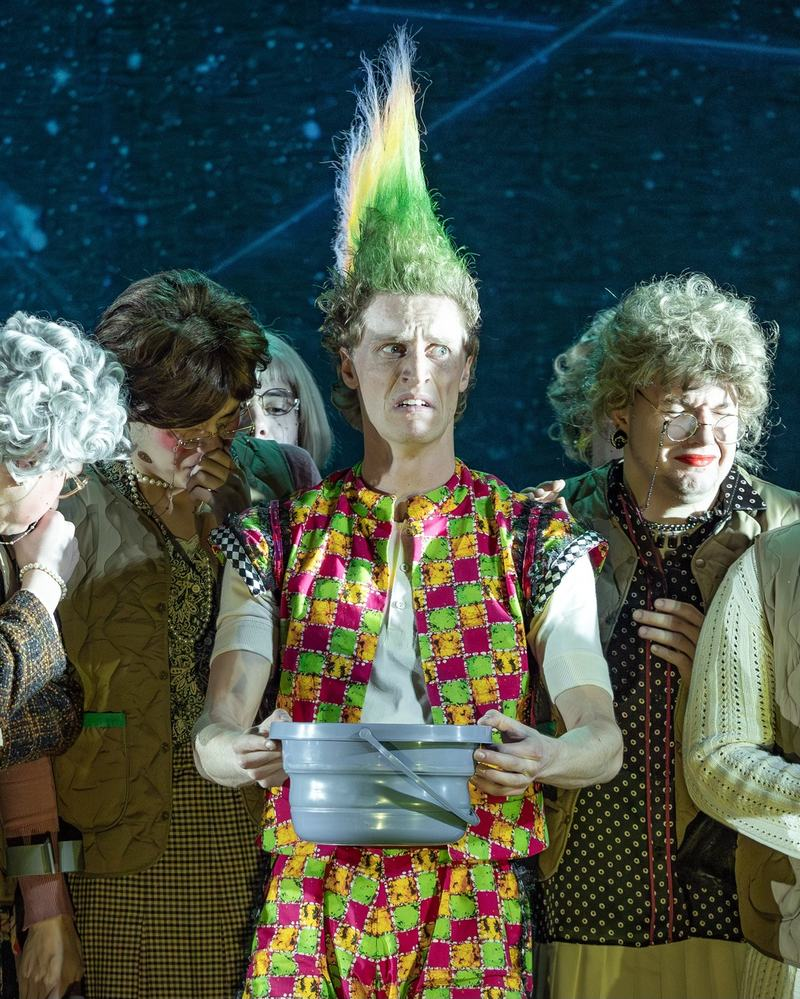
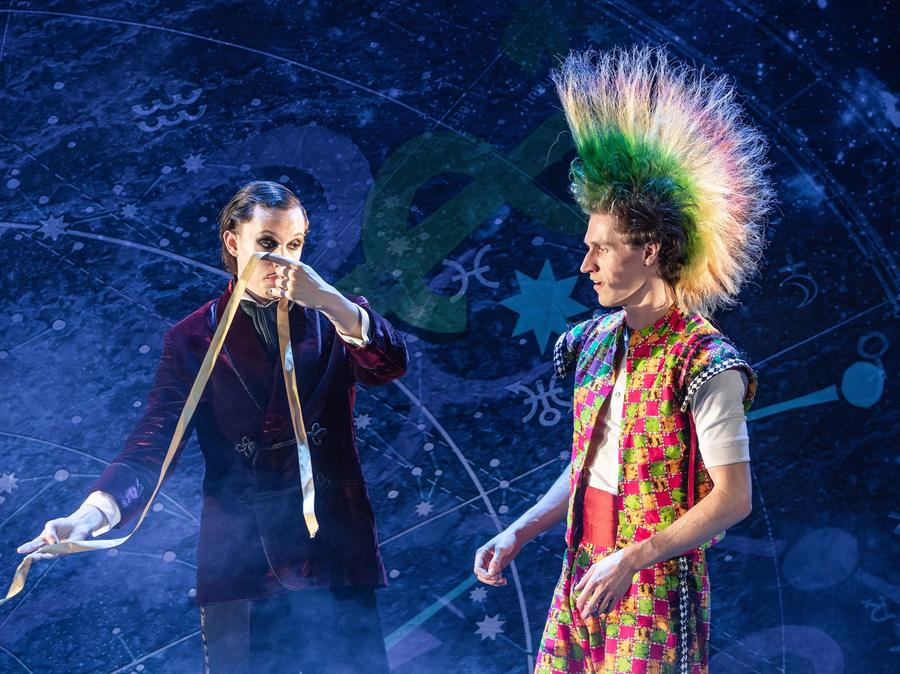
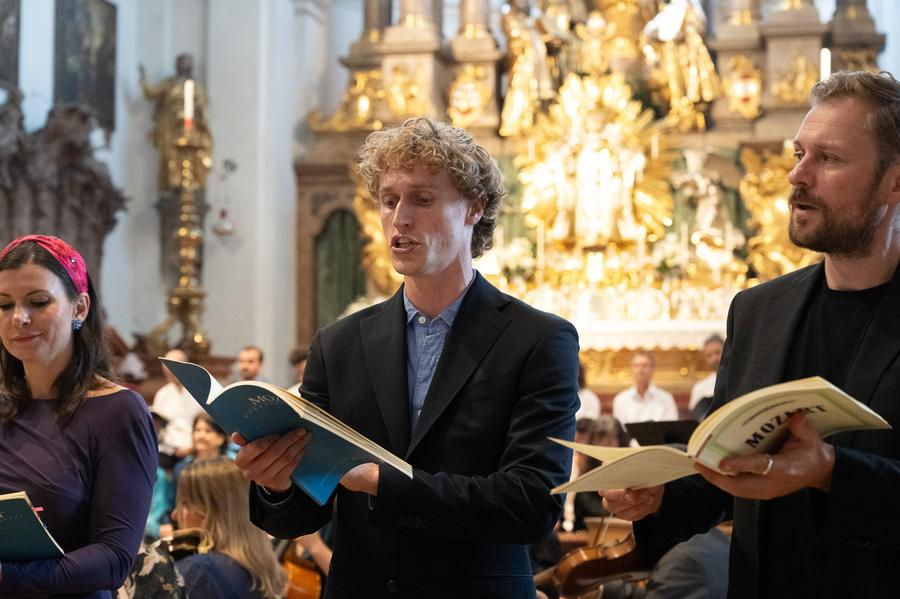
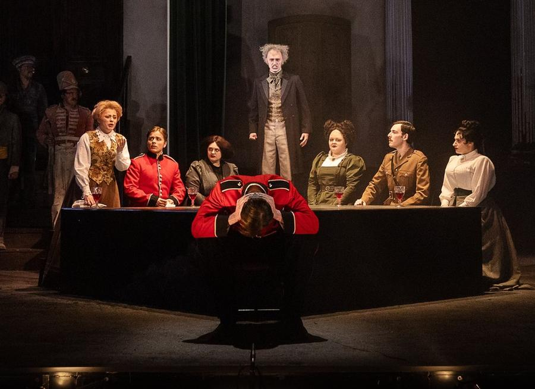
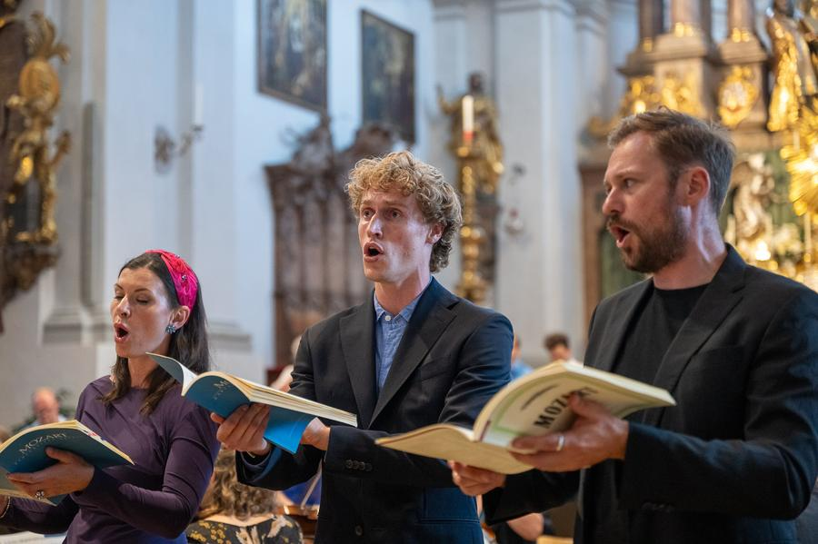
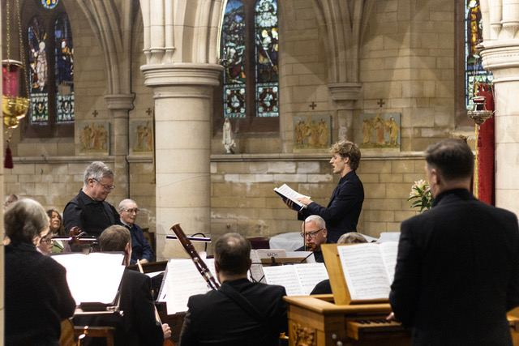
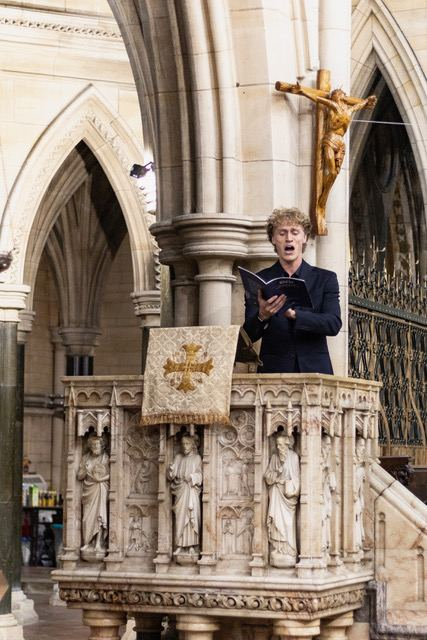
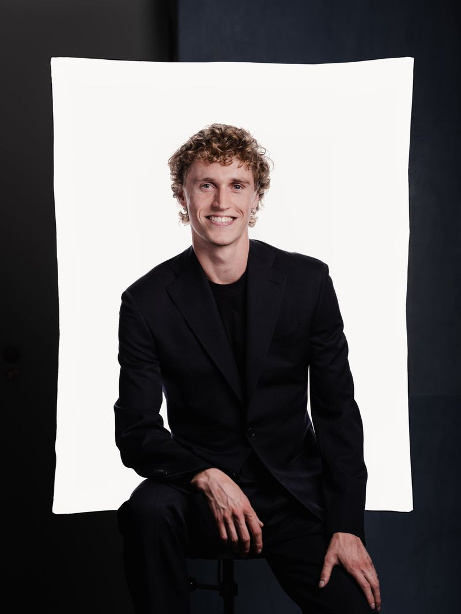

Oscar Bowen-Hill
Classical Tenor. Performer of Opera, Oratorio, Concert and New Music.
Next: Mozart Requiem, 2 November at Alter Peter, Munich
Oscar is a remarkably natural performer, who brings great charisma and honesty to the stage. There’s not only great facility to the voice and an effortless, compelling quality to his musical communication, but his work is made more notable still by his vivid dramatic instincts that makes him an engaging presence in every performance.
Lee Reynolds, conductor
About

A light lyric tenor, at home on the concert platform and the opera stage, with a particular love of Bach and Britten.
Oscar is a recent graduate of the Royal Northern College of Music, with an MMus awarded with distinction. He is currently singing with the ChorAkademie of the Bayerische Staatsoper in Munich.
At the RNCM he was a finalist in the 2025 Song Cycle competition with Beethoven’s An die ferne Geliebte, and was awarded membership of the RNCM Songsters after a performance of Britten’s Serenade for Tenor, Horn and Strings. His opera roles include Trouffaldino in Prokofiev’s L’Amour des Trois Oranges and Sir Philip Wingrave in Britten’s Owen Wingrave.
He is a keen collaborator on new music: he sang Dr Maitland in the premiere of Zakiya Leeming’s Dangerous Matter, now in development for revival in February 2027, worked with James Waide on Gardening Edit #7, and gave the world premiere of Hannah Lam’s Sleepless Night with Leeds Song.
In oratorio and recital his credits include Mendelssohn’s Elijah, Handel’s Messiah, Mozart’s Masses, several Bach cantatas and the Evangelist in Bach’s St Matthew Passion. This December he sings Britten’s Serenade and Winter Words, and in 2027 he takes on the Evangelist in the St John Passion and Britten’s Canticle II: Abraham and Isaac.
Schedule
Mozart: RequiemAlter Peter, Munich
Soloist and ensemble.
Münchner Studiochor: Handel, Wolf and JennefeltSt Johannes Bosco, Germering
Soloist and ensemble member.
Rheinberger: Messe in CAlter Peter, Munich
Soloist and ensemble.
Münchner Studiochor: Handel, Wolf and JennefeltGroßer Konzertsaal, Munich
Soloist and ensemble member. Großer Konzertsaal, Hochschule für Musik und Theater München, Arcisstraße 12, 80333 Munich.
Britten: St NicolasSalford Cathedral
Title role (St Nicolas), with the massed choirs of Salford Cathedral.
Handel: Messiah, with Skipton CamerataSkipton Town Hall
Tenor soloist.
Britten: Serenade for Tenor, Horn and Strings, and Winter WordsGlossop Parish Church
Tenor soloist, with Naomi Atherton (horn), at Glossop Music Festival.
Mozart: Mass in C minor, June 2026.Photo: Walter Glück
Repertoire
Oratorio performed
- Mozart: Requiem, Solemn Vespers and Mass in C minor June 2026
- Bach: St Matthew Passion, Evangelist March 2026
- Mendelssohn: Elijah, tenor and Obadiah May 2025
- Bach: Easter Oratorio May 2025
- Bach: St John Passion, tenor April 2025
- Bach: Christmas Oratorio January 2025
- Handel: Messiah December 2024
Sacred
- Monteverdi: Vespers of 1610, soloist and chorus
- Bach: cantatas (numerous)
Concert performed
- Britten: Serenade for Tenor, Horn and Strings 2025
- Beethoven: An die ferne Geliebte 2024, 2025
Opera roles
- Paolino, Cimarosa: Il matrimonio segreto Kleine Opera, Sept 2026
- Trouffaldino, Prokofiev: L’Amour des Trois Oranges RNCM, Dec 2025
- Dr Charles Maitland, Leeming: Dangerous Matter RNCM, June 2025
- Sir Philip Wingrave, Britten: Owen Wingrave RNCM, Mar 2025
Covered and scenes
- Tom Rakewell, Stravinsky: The Rake’s Progress cover, British Youth Opera, Aug 2026
- Gherardo, Puccini: Gianni Schicchi opening scene, June 2025
- Bobinet, Offenbach: La vie parisienne Act 3 finale, Feb 2025
Arias
- Lalo: Le roi d’Ys, “Vainement, ma bien-aimée”
- Rossini: Il barbiere di Siviglia, “Ecco ridente in cielo”
In preparation: opera
- Count Almaviva, Rossini: Il barbiere di Siviglia
- Peter Quint and Narrator, Britten: The Turn of the Screw
- Albert Herring, Britten
- Apollo, Handel: Semele
- Pedrillo, Mozart: Die Entführung aus dem Serail
- Mylio, Lalo: Le roi d’Ys
In preparation: oratorio
- Bach: St John Passion, Evangelist
- Haydn: The Creation, Uriel
- Bach: Mass in B minor
- Rossini: Petite messe solennelle
In preparation: concert and song
- Britten: Les Illuminations, Canticle II, Winter Words, St Nicolas
- Berlioz: Roméo et Juliette
- Fauré: La bonne chanson
- Vaughan Williams: On Wenlock Edge
- Finzi: A Young Man’s Exhortation
- Warlock: The Curlew
- Schumann: Dichterliebe, Liederkreis
Watch
Videos are hosted on YouTube. Pressing play loads the video from YouTube and shares data with Google; see Datenschutz / Privacy.
Lalo: Le roi d’Ys, “Vainement, ma bien-aimée”
Mozart: Die Entführung aus dem Serail, “Frisch zum Kampfe”
Gallery






Contact

For bookings and performance enquiries, please get in touch.
- Show email address
- @oscar_bowenhill
Comments
More from colleagues